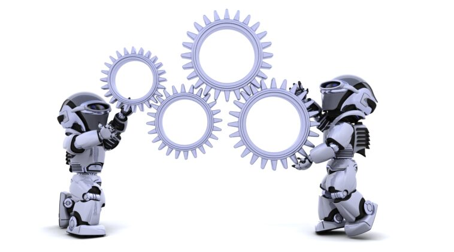
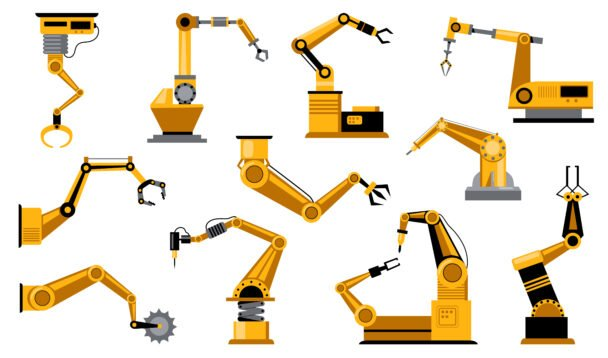
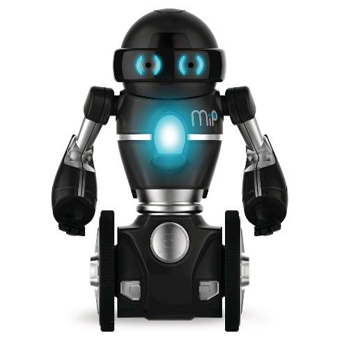

Définition de la Robotique
Définition de la Robotique
Définition de la Robotique
Définition de la Robotique
La robotique est une branche de la science et de l’ingénierie qui rassemble plusieurs disciplines. Les activités principales tournent autour de la conception, la construction et le déploiement des robots mécaniques.

Les ingénieurs de la robotique conçoivent des robots qui peuvent exécuter des tâches dans différents secteurs et sous différentes conditions. Cela peut concerner les industries manufacturières, médicales ou encore l’armée. C’est également la même science qui produit des instruments que nous utilisons dans la vie quotidienne comme les aspirateurs, les jouets, etc.
La robotique est une combinaison de la science, de l’ingénierie et de la technologie pour la production des robots. Entre autres, la science de la robotique inclut également l’électronique, la mécanique, les maths et, parfois, l’informatique quand il s’agit des robots intelligents. Autrement dit, c’est un secteur qui regroupe toutes les techniques pour créer des machines physiques, ou dans certains cas, virtuels.
Ces appareils automatiques servent à remplacer ou à reproduire des actions humaines. Tout comme l’ensemble de la technologie, le domaine de la robotique ne cesse de progresser. En 2005, 90 % des robots qui existaient étaient au service des constructeurs automobiles. Dans la plupart des cas, il était question de bras mécaniques qui servaient à souder ou à visser les différentes pièces d’une voiture.
De nos jours, les secteurs qui utilisent les robots sont très diversifiés, allant du domaine de la santé jusqu’à l’armée. Par ailleurs, la limite de ce que peuvent entreprendre les robots est loin d’être atteinte. L’intelligence artificielle et ses logiciels apportent également leurs contributions à la robotique, en rendant les machines encore plus performantes.

Le terme robotique a été inventé et utilisé pour la première fois par Isaac Asimov, dans une nouvelle intitulée Runaround. Vous l’aurez compris, ce mot est dérivé de « robot ». Néanmoins, c’est dans sa nouvelle Menteur ! Que le mot est apparu pour la première fois au public. Professeur de biochimie, Asimov (1920-1992) était un auteur de romans de science fiction très connu. Outre le mot « robotique », il a également inventé, avec John W. Campbell, les trois lois de la robotique, en 1942. Mais bien sûr, il s’agit là de règles qu’ils ont inventées pour leurs romans.
En réalité, les robots existent déjà depuis des siècles, connus auparavant en tant qu’automates. C’étaient par exemple des machines à musique ou des portes à ouverture automatique. Mais au départ, ces inventions n’étaient pas destinées à des fins commerciales. C’est seulement vers 1960, avec l’intégration des premiers robots industriels, que la robotique a commencé à se répandre. Puis, vers la fin des années 90, l’intégration de la vision artificielle et des capteurs leur ont permis de s’adapter à leur environnement et de se déplacer en fonction.
Le 25 octobre 2017 Sophia est le premier robot à avoir une nationalité . Avec l'obtention de la nationalité saoudienne9,10. Cela a suscité la controverse, car il n'est pas évident de savoir si cela implique que Sophia peut voter ou se marier, ou si un arrêt délibéré du système peut être considéré comme un meurtre
Encore une fois, un robot est le produit issu du domaine de la robotique. Selon l’ATILF (Analyse et traitement informatique de la langue française), il s’agit d’une machine dotée de capteurs et d’activateurs et qui dispose d’un système logique. Comme nous l’avons déjà mentionné, les premiers robots industriels étaient des machines de construction. Maintenant, un robot peut aider à lutter contre un incendie, à nettoyer une maison ou même à assister des chirurgiens dans des opérations. Nous pouvons donc trouver différentes sortes de robots, toutefois, ils ont à peu près des caractéristiques communes.
Déjà, les robots correspondent tous à une construction mécanique dont l’aspect dépend de ses tâches 3 de l’environnement pour lequel il est conçu. Par ailleurs, ils sont équipés de composants électriques qui servent à alimenter le mécanisme. Généralement, cela correspond à une batterie qui produit du courant électrique. Bien qu’il puisse en avoir différents niveaux que nous développerons plus tard, un robot nécessite un minimum de programmation informatique. En effet, c’est grâce à cela qu’il peut effectuer les tâches qui lui sont destinées.

Un robot est un assemblage complexe de pièces mécaniques, électro-mécanique ou pièces électroniques. L'ensemble est piloté par une unité centrale appelée « système embarqué » : une simple séquence d'automatisme, un logiciel informatique ou une intelligence artificielle suivant le degré de complexité des tâches à accomplir. Lorsque les robots autonomes sont mobiles, ils possèdent également une source d'énergie embarquée : généralement une batterie d'accumulateurs électriques ou un générateur électrique couplé à un moteur à essence pour les plus énergivore.
Les principales sortes de capteurs sont :
Les microprocesseurs microprocesseurs ou les microcontrôleurs sont des éléments essentiel du système de pilotage d'un robot. Ils permettent l'exécution de séquences d'instruction ou de logiciels commandant la réalisation d'actions ou de fonctions du robot. On trouve souvent, dans les robots de petite taille, des composants à très faible consommation électrique, car ils ne peuvent emporter que des sources d'énergie limitées.
Les actionneurs les plus communs sont :
Un actionneur est le constituant d'un système mécanique (exemple : bras, patte, roue motrice…) réalisant une action motrice suivant un degré de liberté. Il anime les interfaces haptiques réalisant les actions de saisies d'objets dans les applications de télémanipulation.
 ACCUEIL
ACCUEIL